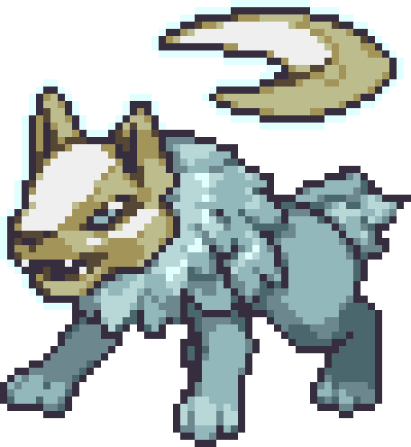
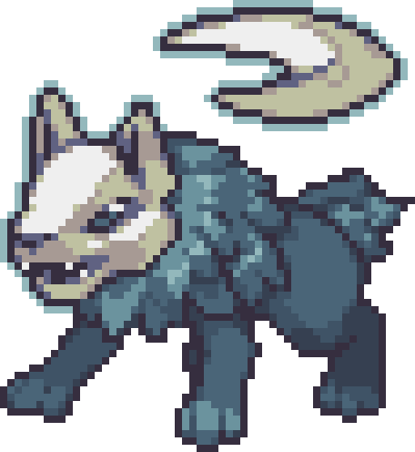
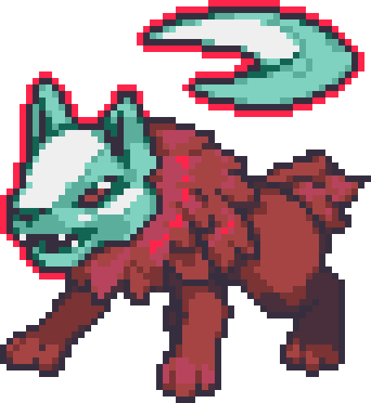

| ← #039 Lunarpup | #040 Lunarwulf | #041 ??? → |
|---|
| Normal Form | Corodex Description | Type |
|---|---|---|
|  | Lunarwulf have gained the ability to draw power from their mysterious moonstone, which enables them to use powerful attacks. |  |
| Potent Form | Locations Data | Evolution Line |
|  | - Evolve Lunarpup | - Lunarpup - Lunarwulf (Level 21) - ??? (Level ???) |
| Perfect Form | Traits | |
|  | - Gravity Pull (30/70) - Menacing (30/70) - Dark Atmoshphere (10/70) |
| Stats | |
|---|---|
| HP | 57 |
| Attack | 30 |
| Defense | 27 |
| Sp. Attack | 63 |
| Sp. Defense | 32 |
| Speed | 52 |
| Skill set | |
|---|---|
| Level 1 | Fade Attack |
| Level 4 | Mighty Roar |
| Level 8 | Hypno Wave |
| Level 12 | Shadewalker |
| Level 17 | Howl |
| Level 23 | Voodoo |